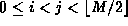

Data Structures and Algorithms
with Object-Oriented Design Patterns in Java
Data Structures and Algorithms
with Object-Oriented Design Patterns in Java
An alternative to linear probing that addresses the primary clustering
problem is called quadratic probing .
In quadratic probing, the function c(i)
is a quadratic function in i. The general quadratic has the form
The general quadratic has the form
However, quadratic probing is usually done using .
Clearly, satisfies property 1. What is not so clear is whether it satisfies property 2. In fact, in general it does not. The following theorem gives the conditions under which quadratic probing works:
Theorem When quadratic probing is used in a table of size M, where M is a prime number, the first probes are distinct.
extbfProof (By contradiction). Let us assume that the theorem is false. Then there exist two distinct values i and j such that , that probe exactly the same position. Thus,
Since M is a prime number,
the only way that the product (i-j)(i+j) can be zero modulo M
is for either i-j to be zero or i+j to be zero modulo M.
Since i and j are distinct,  .
Furthermore, since both i and j are less than ,
the sum i+j is less than M.
Consequently, the sum cannot be zero.
We have successfully argued an absurdity--if the theorem is false one of two quantities must be zero,
neither of which can possibly be zero.
Therefore, the original assumption is not correct
and the theorem is true.
.
Furthermore, since both i and j are less than ,
the sum i+j is less than M.
Consequently, the sum cannot be zero.
We have successfully argued an absurdity--if the theorem is false one of two quantities must be zero,
neither of which can possibly be zero.
Therefore, the original assumption is not correct
and the theorem is true.
Applying Theorem  we get that quadratic probing works as long as the table size is prime
and there are fewer than n=M/2 items in the table.
In terms of the load factor ,
this occurs when
we get that quadratic probing works as long as the table size is prime
and there are fewer than n=M/2 items in the table.
In terms of the load factor ,
this occurs when  .
.
Quadratic probing eliminates the primary clustering phenomenon of linear probing because instead of doing a linear search, it does a quadratic search:
 Copyright © 1998 by Bruno R. Preiss, P.Eng. All rights reserved.
Copyright © 1998 by Bruno R. Preiss, P.Eng. All rights reserved.